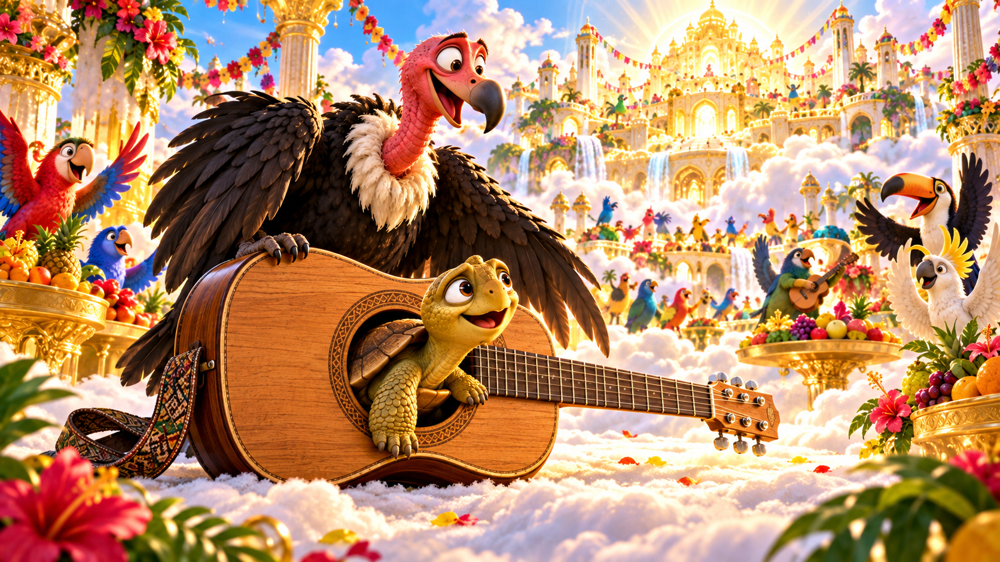
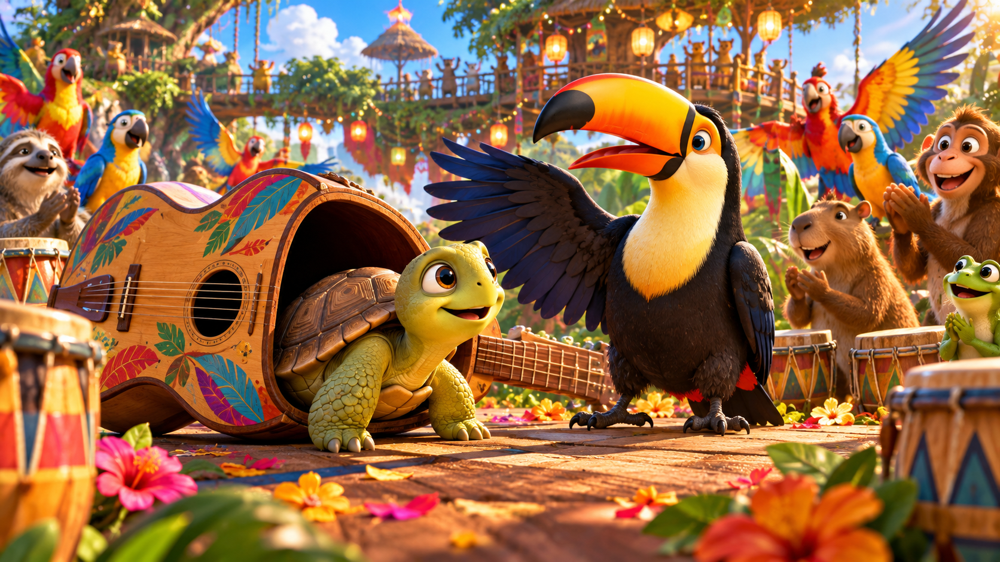
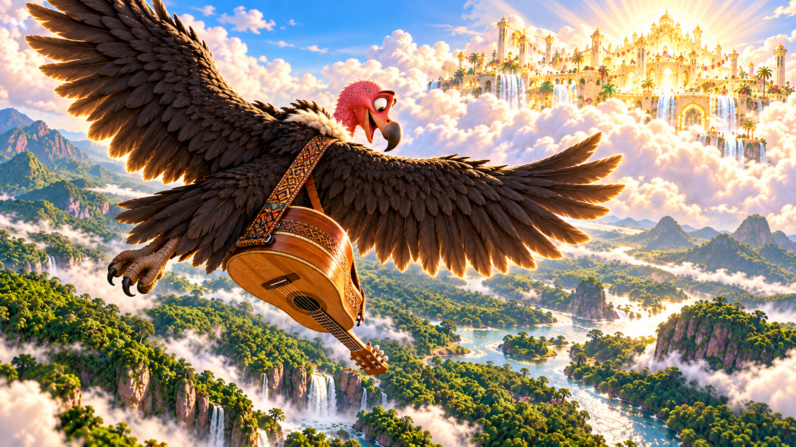
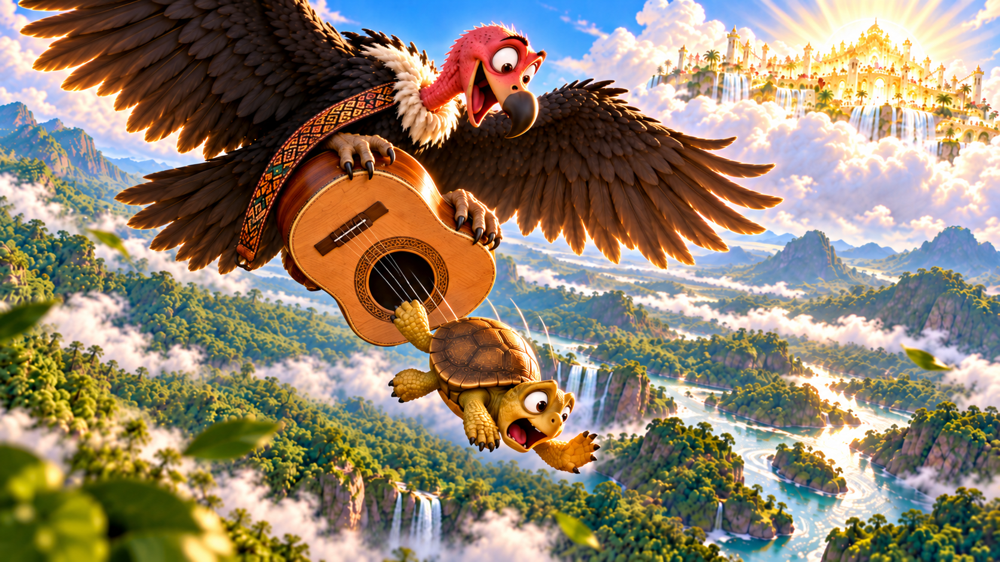
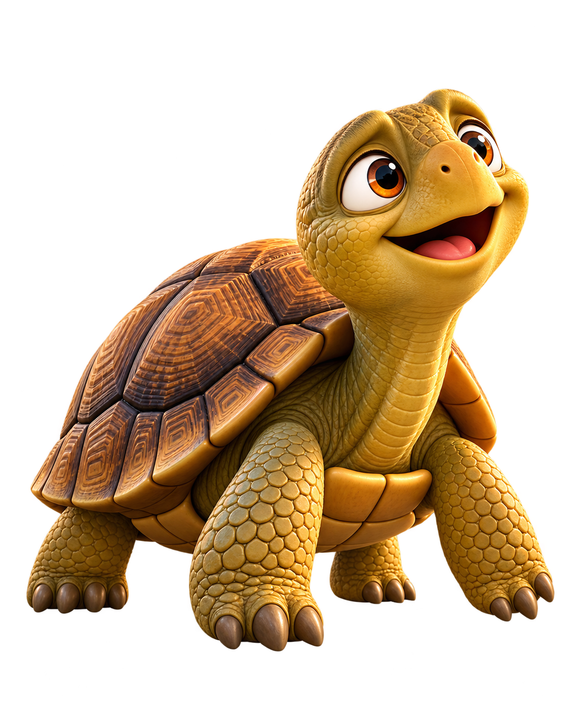

Ця історія сталася дуже давно в одному тропічному лісі.
Серед густої зелені, величезних дерев і галасливих птахів жив Джабуті — веселий, добрий і страшенно допитливий.
Йому до всього було діло: хто куди летить, що шелестить у траві, звідки взялася нова стежка і чому мавпи з самого ранку так підозріло хихочуть.
Через свою цікавість Джабуті вже не раз потрапляв у різні історії.
Але одна пригода була настільки особливою, що про неї в лісі пам’ятали ще дуже довго.
Отже, слухайте.
Стояло спекотне літо. Сонце так припікало, що навіть папуги сперечалися тихіше, а мавпи шукали найгустішу тінь.
І тоді птахи вирішили:
— А влаштуймо свято!
— У джунглях? — запитав хтось.
— Та ні! Там спекотно й гамірно. Полетімо святкувати на небо! Там і прохолодніше, і тихіше, і краєвид чудовий!
Ідея всім страшенно сподобалася.
Але була одна умова: на свято могли потрапити лише ті, хто має крила.
Сповістити про це мешканців лісу доручили Тукану.
Він літав над деревами й голосно вигукував:
— Увага! Увага! Велике свято на небі! Запрошуються всі, хто має крила!
Саме в цей час неподалік кудись поспішав Джабуті.
Почувши лише слова «велике свято», він одразу зупинився.
— Свято?! О! Чудово! Я неодмінно прибуду!
Тукан уже відлітав, але почув його й повернув голову:
— Джабуті! Ти не дослухав!
— Та все я почув! Свято! На небі! Буду!
Тукан махнув крилами й прокричав ще раз, уже здалеку:
— Запрошуються ті, хто має кри-и-и-ла-а-а-а!
Джабуті завмер.
Подивився на одну лапу. На другу. Озирнувся на панцир. Підняв голову до неба.
— Крила… От саме крил мені й не вистачає.
На хвилинку Джабуті засмутився.
Але тільки на хвилинку.
Бо якщо він щось задумував, то відмовити його було майже неможливо.
— Немає крил? Значить, треба придумати щось інше!
І Джабуті почав міркувати.
Він думав під деревом. Думав біля річки. Думав дорогою додому. Навіть мало не врізався в пеньок, бо дивився не під ноги, а кудись угору.

І тут він побачив свого знайомого — грифа Урубу.
Урубу саме готувався до свята. Він був музикантом і збирався взяти із собою улюблену гітару.
Джабуті подивився на Урубу.
Потім — на гітару.
Потім знову на Урубу.
А тоді дуже повільно усміхнувся.
— Здається, я знаю, як потраплю на свято…

Того вечора Джабуті завітав до Урубу.
Вони розмовляли про погоду, про музику, про майбутнє свято. Джабуті ставив стільки запитань, що Урубу вже почав позіхати.
Нарешті Джабуті попрощався:
— Ну, бувай! Гарно тобі повеселитися!
— Дякую! — відповів Урубу.
Джабуті пішов…
Точніше, зробив вигляд, що пішов.

Щойно Урубу відвернувся, Джабуті тихенько повернувся, підкрався до гітари й заліз усередину.
— Тіснувато, — прошепотів він. — Але ж не щодня літаєш на небо!
Наступного ранку Урубу взяв гітару.
— Дивно… Щось вона сьогодні важка.
Усередині Джабуті завмер і навіть перестав дихати.
— Мабуть, від хвилювання перед концертом, — вирішив Урубу.
І полетів.

Для Джабуті це був перший політ у житті.
Гітара хиталася.
Десь поруч свистів вітер.
Джабуті підстрибував усередині на кожному різкому повороті.
— Ой!
Потім ще раз:
— Ой!
А після третього поштовху прошепотів:
— І навіщо птахам узагалі подобається літати?
Нарешті Урубу дістався до неба.
Всюди лунала музика, сяяли вогні, стояли столи з фруктами, а птахи співали й танцювали серед хмар.
Урубу поставив гітару осторонь і пішов вітатися з друзями.
Джабуті обережно визирнув.
Нікого.
Ще трохи висунув голову.
Ніхто не дивиться.
І тоді він швиденько вибрався назовні.
За кілька хвилин хтось із птахів побачив його.
— Джабуті?!
Усі озирнулися.
— Як?!
— Звідки?!
— Ти ж не вмієш літати!
Джабуті лише загадково посміхався.
— У кожного є свої маленькі секрети.
І пішов веселитися.
Він танцював, сміявся, слухав музику й куштував усе, до чого міг дотягнутися.
Джабуті був неймовірно задоволений собою.
Йому таки вдалося!
Та свято добігало кінця.
Птахи почали збиратися додому.
Джабуті швидко пригадав, що назад йому теж якось треба потрапити.
Тож він знову нишком заліз у гітару Урубу.
Урубу злетів.
Дорога назад була довгою.
Джабуті сидів тихо-тихо.
Але раптом у нього засвербіло під панциром.
Він потерся об стінку гітари.
Шурх!
Урубу насторожився.
Джабуті завмер.
Через хвилину гітару хитнуло.
Бум!
— Що це там? — здивувався Урубу.

Він зазирнув усередину.
І побачив Джабуті.
— А-а-а! То ось як ти потрапив на свято!
Урубу дуже розсердився.
— Ти мене обдурив!
Він перевернув гітару отвором донизу.
— Урубу, зачекай! Давай усе обговори-и-и-и-мо!
Але було пізно.
Джабуті випав.
Він летів униз і бачив, як земля стає дедалі ближчою.
— Тільки б урятуватися! Тільки б урятуватися!
Ще нижче.
— Якщо врятуюся — більше ніколи нічого такого не вигадуватиму!
Ще нижче.
— Ніколи! Чуєте?! Ні-ко-ли!
І тут —
БУМ!
Джабуті впав просто на каміння.
Удар був таким сильним, що його міцний панцир розколовся на багато шматочків.
На щастя, сам Джабуті залишився живий.
Невдовзі його знайшли друзі.
Вони обережно зібрали всі шматочки панцира й склали їх докупи.
Минув час.
Джабуті одужав.
Він знову гуляв лісом, сміявся, ставив безліч запитань і цікавився всім на світі.
Тільки його панцир відтоді виглядав інакше — ніби був складений із багатьох окремих частинок.
Кажуть, саме тому панцир Джабуті й сьогодні має такий незвичайний візерунок.
А щодо його обіцянки більше нічого не вигадувати…
Ну…
Той, хто хоч трохи знає Джабуті, розуміє: ця обіцянка довго не протрималася.
Бо якщо поруч живе допитливий Джабуті, нова пригода — лише питання часу.
1. Хто повідомляв мешканців лісу про свято?
2. Де мало відбутися свято?
3. Що Урубу взяв із собою на свято?
4. Де сховався Джабуті?
5. Що видало Джабуті дорогою назад?